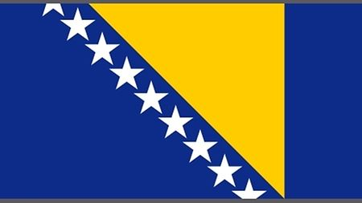
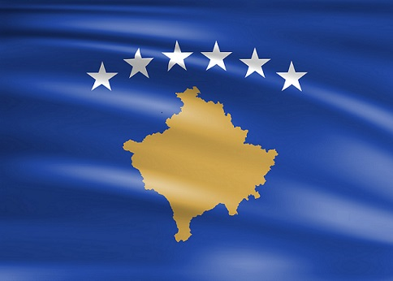
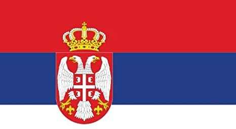
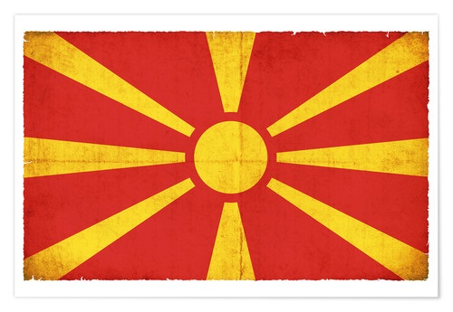
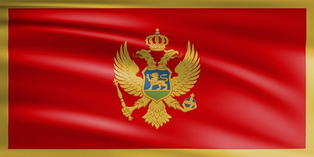

Bosnien und Herzegowina ist ein südosteuropäischer Bundesstaat. Er besteht geografisch aus der Region Bosnien im Norden, die rund 80 Prozent des Staatsgebiets einnimmt, und der kleineren Region Herzegowina im Süden. Das Staatsgebiet grenzt an das Adriatische Meer auf der Balkanhalbinsel. Die Nachbarsländer sind: im Norden und Westen Kroatien, im Osten Serbien und im Süden Montenegro. Bosnien und Herzegowina ist dafür bekannt, dass sie sehr gastfreundlich sind und Touristen so gut entgegennehmen. Die Hauptstadt ist Sarajevo.
Einwohnerzahl: ca. 3.5 Mio.
Hauptstadt: Sarajevo
Fläche: 51'197 km²
Amtssprachen: Bosnisch, Kroatisch und Serbisch
Unabhängigkeitstag: 1. März 1992
Bruttoinlandprodukt(BIP): 21.3 Milliarden US-Dollar.
Bosnien war Teil des ehemaligen Jugoslawien. Die Republik Bosnien und Herzegowina ging in seiner heutigen Form aus dem Abkommen von Dayton aus und löste den Krieg auf. Bosnien entsteht aus zwei Entitäten Föderation Bosnien und Herzegowina und Republik Srpska. Die Staatsbürger von Bosnien werden Bosnier genannt. Darunter sind auch die dort Serben, Kroaten und die Bosniaken. Die Bosniaken sind die Bosner, die bosnischer Abstammung sind und dem Glauben des Islams angehören. Die Bevölkerung hat sich in den letzten 70 Jahren um 131% vergrössrt. Von 2.6 Mio. zählt man heute 3.5 Mio. Bosnien ist einer der Länder, in der die Glaubensrichtungen sich im Laufe der Jahre am meisten verändert haben. Die meisten Einwohner gehören dem Islam oder der Christentum an. Bei den Muslimen sind es etwa 50.7% und bei den Christen ca. 30.7%;
Der Kosovo auch Republika e Kosovës im albanischen genannt ist eine Republik in Südosteuropa auf dem westlichen Teil der Balkanhalbinsel. Die Republik Kosovo hat etwa 1,9 Millionen Einwohner mit der Hauptstadt Prishtina, die in der Landesmitte vorzuweisen ist. 115 der 193 Mitgliedstaaten der Vereinten Nationen erkennen die Republik Kosovo als einen unabhängigen Staat an. Der Kosovo war ebenfalls wie alle anderen Staaten Teil des ehemaligen Jugoslawien. 1999 sprach der Kosovo seine Unabhängigkeit aus.
Einwohnerzahl: ca. 1.9 Mio.
Hauptstadt: Prishtina
Fläche: 10'887 km²
Amtssprachen: Albanisch und Serbien
Unabhängigkeitstag: 17. Februar 2008
Bruttoinlandprodukt(BIP): 8,6 Milliarden US-Dollar.
Er grenzt im Südwesten an Albanien, im Nordwesten an Montenegro, im Norden und Osten an Serbien bzw. Zentralserbien und im Südosten an Nordmazedonien. Der heutige Kosovo ist grösstenteils für den Kosovokrieg bekannt. Im Jahre 1999 marschierten Serbische Truppen in den Kosovo. Das kleine Land wehrte sich aber gegen die Grossmacht Serbiens. Die Nato stoppte den Einmarsch und den Krieg der beiden Staaten. Der Kosovo liegt im Zentrum der Balkanhalbinsel. Die Einwohner des kleines Volkes nennt man Kosovaren. Diese stemmplen sich jedoch entweder als Albaner, als Serben oder als Bosniaken ab. Die Bevölkerung ist grösstenteils albanisch Abstammend, nämlich 96% des Volkes. Auch deshalb gelten immernoch Unruhen zwischen Serbien und dem Kosovo. Vor allem im Norden, in der die meisten Serben anzutreffen sind.
 Albanien amtlich Republik Albanien ist ein Staat in Südosteuropa auf der
Balkanhalbinsel. Das Staatsgebiet
grenzt im Norden an Montenegro und den Kosovo, im Osten an Nordmazedonien und im Süden an Griechenland. Albanien
grenzt an das Adriatische und
das lonische Meer, womit das Land zu den Anrainerstaaten zählt. Die Hauptstadt und gleichzeitig des Landes ist
Tirana.
Albanien amtlich Republik Albanien ist ein Staat in Südosteuropa auf der
Balkanhalbinsel. Das Staatsgebiet
grenzt im Norden an Montenegro und den Kosovo, im Osten an Nordmazedonien und im Süden an Griechenland. Albanien
grenzt an das Adriatische und
das lonische Meer, womit das Land zu den Anrainerstaaten zählt. Die Hauptstadt und gleichzeitig des Landes ist
Tirana.
Einwohnerzahl: ca. 2.8 Mio.
Hauptstadt: Tirana
Fläche: 28'748 km²
Amtssprachen: Albanisch und Serbien
Unabhängigkeitstag: 28. November 1912
Bruttoinlandprodukt(BIP): 15,3 Milliarden US-Dollar.
Albanien ist eine demokratisch verfasste parlamentarische Republik. Nach dem von den Vereinten Nationen erhobenen Index der menschlichen Entwicklung zählt Albanien zu den hoch entwickelten Staaten der Erde. Seit dem Ende des Kommunismus wurden bedeutende Schritte zur Verbesserung der wirtschaftlichen und sozialen Lage erreicht. Trotz aller Fortschritte zählt Albanien immernoch zu den ärmeren Ländern Europas. Der Kommunismus geleitet vom damaligen Enver Hoxha war eine schlimme Zeitepoche Albaniens. Enver Hoxha war der allein regierende Diktator dieses Zeit alters. Sehenswürdigkeiten ALbanien sind die über 100 gebauten Bunker. Der ehemalige Diktator wollte sich im ernsten Falle schützen können. Für was Albanien und der Kosovo bekannt sind ist die Natur. Diese zählt zu einen der schönsten im ganzen Balkan. Dazu beherbergt Albanien wunderschöne Meere, die Touristen aller Welt anzieht. Es ist der Ursprung des alten Volkes der Illyrer.
Serbien ist ein Binnenstaat in Südost- und Mitteleuropa. Serbien liegt im Zentrum der Balkanhalbinsel und grenzt im Norden an Ungarn, im Osten an Rumänien und Bulgarien, im Süden an Nordmazedonien und Albanien bzw. Kosovo, im Südwesten an Montenegro und im Westen an Bosnien und Herzegowina und Kroatien. Nach Einwohnern liegt Serbien mit gut 7,1 Millionen vor Dänemark auf Rang 22 der Länder Europas. Über 80 Prozent der Bevölkerung sind Serben, daneben gibt es größere Gruppen von Ungarn, Roma und Bosniaken.
Einwohnerzahl: ca. 7 Mio.
Hauptstadt: Belgrad
Fläche: 77'474 km²
Amtssprachen: Serbisch
Unabhängigkeitstag: 25. März 1867
Bruttoinlandprodukt(BIP): 51,4 Milliarden US-Dollar.
Serbiens jüngere Geschichte ist geprägt durch seine Rolle als größter Teilstaat Jugoslawiens. Seit dem endgültigen Zerfall Jugoslawiens ist Serbien der einzige Rechtsnachfolger des ehemaligen Königreich. Die Wirtschaftsleistung des Landes ging infolge der Jugoslawienkriege stark zurück. In den Jahren von 2003 - 2008 erholte sich man wieder ein wenig davon. Serbien wurde in der Vergangenheit mehrmals vorgeworfen, Auslöser vieler Katastrophen zu sein. In Verbindung brachte man so den 1. Weltkrieg, die Jugoslawienkriege und oder etwa den Kosovokrieg, der auch zum Jugoslawienkrieg dazugezählt wird. Serben gelten mit Russen als Slaven. Beide Länder sind glaubenstechnisch her orthodox. Durch die Vorfahren und der Religion fühlten sich die beiden Völker verbunden und zeigten und zeigen heute noch immernoch Solidarität zueinander. Hydrographisch befindet sich Serbien zum größten Teil im Einzugsbereich der Donau, die in ihrem Mittellauf das Land auf einer Strecke von 588 Kilometern durchquert. Nach der Volkszählung von 2011 bekennen sich 84,6 Prozent der Bürger Serbiens zum christlich-orthodoxen Glauben. Der Rest sind Muslime, wie Atheisten.
Nordmazedonien ist ein Binnenstaat in Südosteuropa. Er umfasst den nördlichen Teil der historischen Region Makedonien. Seit dem 27. März 2020 ist Nordmazedonien Mitglied der NATO sowie bereits seit 2005 ein Beitrittskandidat der Europäischen Union. Nordmazedonien hat eine der schwächsten Volkswirtschaften Europas und befindet sich in einem Transformationsprozess, sowohl wirtschaftlich als auch politisch. Das Land hat mit hohen Arbeitslosenzahlen und einer schwachen Infrastruktur sowie fehlenden Investitionen zu kämpfen.
Einwohnerzahl: ca. 2 Mio.
Hauptstadt: Skopje
Fläche: 25'713 km²
Amtssprachen: Mazedonisch und Albanisch
Unabhängigkeitstag: 8. September 1991
Bruttoinlandprodukt(BIP): 12,7 Milliarden US-Dollar.
Der Staat wurde 1944 im Widerstand als Sozialistische Republik Mazedonien gegründet, war ab 1946 offiziell südlichste Teilrepublik des sozialistischen Jugoslawien und erklärte 1991 als Republik Mazedonien seine Unabhängigkeit. Aufgrund des Namensstreits mit dem südlichen Nachbarn Griechenland wurde der Staat international häufig als ehemalige jugoslawische Republik Mazedonien. Die Einigung mit der griechischen Regierung am 12. Juni 2018 leitete die Änderung des Staatsnamens ein, denn von Mazedonien wurde Nord-Mazedonien.Im Gegenzug erklärte sich Griechenland bereit, Beitrittsverhandlungen Nordmazedoniens mit der EU und der NATO nicht mehr zu blockieren. Es grenzt im Norden an Serbien, im Osten an Bulgarien, im Süden an Griechenland, im Westen an Albanien und im Nordwesten an das Kosovo. Die längste Ausdehnung von Norden nach Süden beträgt 188 km, von Westen nach Osten 216 km.
Montenegro ist eine Republik an der südöstlichen Adriaküste in Südosteuropa. Das montenegrinische Staatsgebiet grenzt im Nordwesten an Kroatien, Bosnien und Herzegowina, im Nordosten an Serbien, im Südosten an Kosovo und im Süden an Albanien. Am 3. Juni 2006 wurde Montenegro erneut unabhängig; zuvor hatte es seit 1920 zu Jugoslawien gehört. Der Balkanstaat ist mit etwa 625.000 Einwohnern und einer Fläche von 13.812 Quadratkilometern einer der kleineren Staaten Europas.
Einwohnerzahl: ca. 642'000
Hauptstadt: Podgorica
Fläche: 13'812 km²
Amtssprachen: Montenegrinisch1
Unabhängigkeitstag: 13. Juli 1878
Bruttoinlandprodukt(BIP): 5,5 Milliarden US-Dollar.
Montenegro ist ein im europäischen Vergleich relativ dünn besiedeltes, waldreiches Gebirgsland im südöstlichen Teil des Dinarischen Gebirges. Die unzugänglichen Hochgebirge werden durch steile abweisende Schlcuhten zerteilt. Darunter gilt die Tara-Schlucht als tiefste Schlucht Europas. Nur im Südosten wird Montenegro durch Niederungen geprägt. Die Amtssprachen Montenegros sind laut der Verfassung vom 19. Oktober 2007 Montenegrinisch, Serbisch, Bosnisch, Albanisch und Kroatisch. Von Montenegros Bevölkerung sprechen 41.1% Montenegrinisch, 39.1% Serbisch, 3,7 % Bosnisch und 3.5% Serbokroatisch. Montenegro ist dafür bekannt, dass sie trotz grossem serbischem Anteil eine hohe Prozenanzahl der Muslime besitzen.
Diese übersicht soll zeigen, wie sehr sich die Länder ähneln, aber auch unterscheiden. Man kann sehen, dass sie sich gegenseitig der Wirtschaft bezüglich geschadet haben und so im Regenerationsprozess sind. Das ehemalige Jugoslawien gespaltet in diesen Ländern.